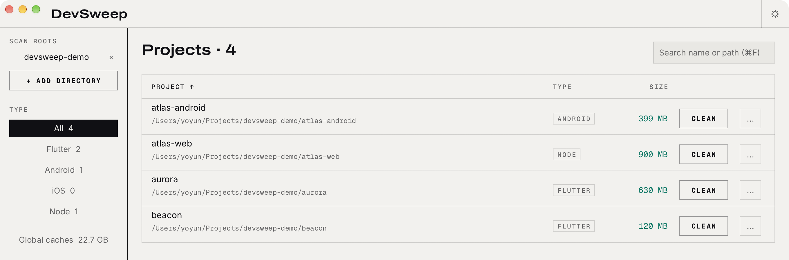

开发工具 · macOS / WindowsDeveloper tool · macOS / Windows
项目里的几十 GB，该清一清了。Tens of gigabytes are hiding in your build folders.
DevSweep 扫描你的项目，找出构建产物和依赖缓存，标出各自占多少空间。勾选不需要的部分，确认后清理。删除默认进废纸篓。DevSweep scans your projects for build artifacts and dependency caches, shows how much space each one takes, and deletes only what you tick. Deletions go to the Trash by default.


覆盖Coverage
它清理什么What it cleans
DevSweep 列出项目里每一条可清理的路径和它的体积。危险项默认不勾选。DevSweep lists every cleanable path in a project with its size. Risky entries start unchecked.
- Flutter
- Android
- iOS
- Java
- Node
- Python
- Rust
- .NET
- Unity
项目之外Outside your projects
依赖缓存Dependency caches
- Gradle caches
- Gradle distributions
- Maven local repository
- npm
- pnpm
- bun
- Yarn
- pub
- CocoaPods
- Go module cache
工具链缓存Toolchain caches
- Playwright
- Xcode DerivedData
- Cargo registry
- pip
- Go build cache
清掉一个缓存，会为所有项目腾出空间，下一次构建会重新下载或重建需要的内容。Clearing a cache frees space for every project, and the next build downloads or rebuilds what it needs.
全局缓存列表是固定的，rules.toml 不能扩展，也不能关闭。The global cache list is fixed. rules.toml cannot extend or disable it.
用法How it works
从扫描到清理From scan to clean
-
添加目录Add a directory
把存放项目的父目录加进来，例如 ~/Projects 或 D:\code。Point it at the folder that holds your projects, such as ~/Projects or D:\code.
-
查看体积，勾选要清的内容Check the sizes and tick what goes
危险项默认不勾，确认框写明条目数、总大小和超过 5 GB 的单项。Risky entries start unchecked, and the confirmation names the count, the total, and any single item over 5 GB.
-
确认清理Confirm
默认进废纸篓，误删可恢复；设置里可以改成直接删除。Deletions go to the Trash by default, so a mistake is recoverable; Settings can switch to permanent deletion.
下载Download
安装Install
macOS
DevSweep_<版本><version>_macos.dmg
打开它，把 DevSweep 拖进「应用程序」。Open it and drag DevSweep into Applications.
Windows
devsweep_<版本><version>_windows.zip
便携版，解压后运行 devsweep.exe。Portable. Unzip and run devsweep.exe.
构建未签名，系统会拦一次The builds are unsigned, so the OS stops them once
这是正常的，不是文件损坏。This is expected, not corruption.
macOS
打开「系统设置」，进入「隐私与安全性」，点「仍要打开」。也可以在访达里右键点 DevSweep，选「打开」。或者在终端执行：Open System Settings, go to Privacy & Security, and click Open Anyway. You can also right-click DevSweep in Finder and choose Open. Or run this in Terminal:
xattr -dr com.apple.quarantine /Applications/DevSweep.appWindows
SmartScreen 出现时，点「更多信息」，再点「仍要运行」。When SmartScreen appears, click More info, then Run anyway.
细节Details
常见问题Questions
要重新下载依赖吗？Will I have to re-download dependencies?
会。清掉一个全局缓存，会为所有项目腾出空间，下一次构建会重新下载或重建需要的内容。构建缓存会让下一次构建变慢。Yes. Clearing a global cache frees space for every project, and the next build downloads or rebuilds what it needs. Build caches make the next build slower.
会有数据离开我的机器吗？Does anything leave my machine?
不会。没有云端，没有账号，数据不出本机。No. No cloud, no account, nothing leaves the machine.
可以改清理规则吗？Can I change the cleanup rules?
可以。rules.toml 能停用某条内置项目规则、改哪些条目默认勾选，或者添加一个目录。全局缓存列表是固定的。Yes. rules.toml can disable a built-in project rule, change which entries start checked, or add a directory. The global cache list is fixed.
阅读规则文档Read the rules docs支持 Linux 吗？Is Linux supported?
目前只发布 macOS 和 Windows 版本。Only macOS and Windows builds are published today.